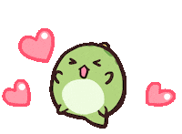

Motivos, pra quê?
Sua simplicidade e carinho fazem com que eu goste cada vez mais de você
meu xuxu. Gosto muito da sua companhia, mesmo quando a gente não consiga fazer algo juntos
o tempo todo, eu sempre anseio por mais momentos com você. Sei que não sou a
melhor companhia, nem a mais falante ou divertida, mas só de estar comigo já faz uma grande
diferença, e sei que pode ser melhor, e cada vez que passamos o tempo sei que é melhor.
Amo o gosto que você tem pelas coisas, seja filmes,
ideias e até pessoas. O carinho que
eu não consigo ter por elas, você completa com tanta naturalidade, acho muito fofo da sua parte. Além
do fato de me fazer rir semmpree, eu me tornei mais sorridente por causa disso :D

Desde o dia do studio ghibli eu já soube.. Você me encantou de um jeitinho unico, sabe?
Teve muitas situações que não foram nada coincidentes e me provaram isso.
Até sua maneira tranquila e um pouco desdenhosa de lidar com as coisas... Mas que eu respeito
e admiro.
Você é pé firme, e isso falta em mim. Até me estressa por ser um pouco confuso as vezes.
Mas saiba que tudo isso é apenas no papel, não somos perfeitos, mas reais, e isso é mais do que suficiente para mim.. No fim das contas eu amo tudo que você faz. Tudo por aqui é complicado,
sei que palavras às vezes não bastam.
Porém, eu já pensei em algo para nós :D
Eu sei que
você não gosta desse tipo de coisa, mas eu amo fazer isso para e por você. Então aceite de coração tá bão?
Saiba que você faz sim os meus dias melhores, mesmo que você não acredite.
De qualquer forma, eu espero poder retribuir tudo isso sempre.
Feliz natal! Que esse dia, como todos, seja iluminado pra guiar o meu caminho até vc.
(Beaah)